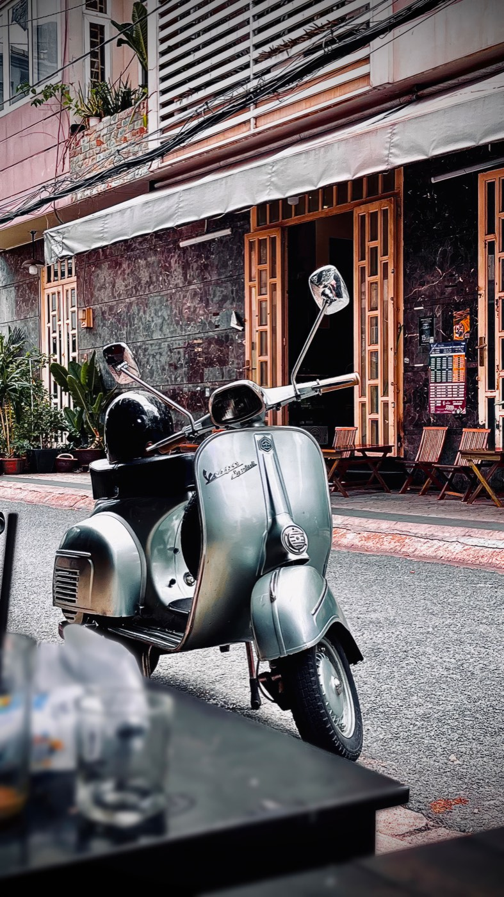

В объявлении пробег часто выглядит как главный аргумент: «всего 3 000 км», «почти не ездили», «стоял в гараже». Это приятный сигнал, но не гарантия. У подержанного байка важнее, насколько он живой сейчас: как заводится, тормозит, держит руль и выглядит в мелочах. Одометр — это начало разговора, а не причина сразу переводить деньги.
Для 50cc небольшой пробег — хорошо, но только если он совпадает с возрастом и внешним состоянием. Байк с 5 000 км, у которого стёртые ручки, лысая резина и уставшие тормоза, вызывает больше вопросов, чем аккуратный байк с 15 000 км и понятной историей обслуживания.
Поэтому не делим объявления на «до 10 тысяч — брать» и «выше — нельзя». Смотрим на связку: год, цена, пробег, состояние пластика, колёс, тормозов и звук мотора. Чем ниже заявленный пробег у старого байка, тем спокойнее и внимательнее его надо проверять.
Не нужно устраивать допрос. Достаточно спросить просто: кто ездил на байке, почему продают, когда меняли масло, что уже делали по технике и есть ли сейчас нюансы. Нормальный продавец обычно отвечает прямо. Если цифры и история постоянно меняются, лучше не тратить на этот лот время.
При дистанционной покупке просим то же, что и всегда: фото регистрации, где видны номер байка и объём 49.5/50cc, плюс живое видео запуска и короткой езды. О том, как отдельно проверить объём по документам, написали в этом материале.
Сам по себе большой пробег не делает байк плохим. Стоп-сигнал — когда пробег выглядит неправдоподобно или продавец не готов подтвердить состояние видео. Отказываемся, если он избегает холодного запуска, показывает байк только издалека, не может объяснить явные следы износа или просит предоплату до нормальной проверки.
Мы не покупаем цифру на приборке. Сначала смотрим документы и реальный объём, затем технику и внешний вид. После покупки делаем базовое обслуживание, мойку и подготовку — чтобы покупатель в Нячанге получил понятный байк, а не чужую проблему под красивой фотографией.
Если байк нужно покупать из другого города, сначала прочитай наш разбор безопасной доставки. А если хочешь выбрать уже подготовленный вариант в Нячанге — посмотри актуальные байки в каталоге.